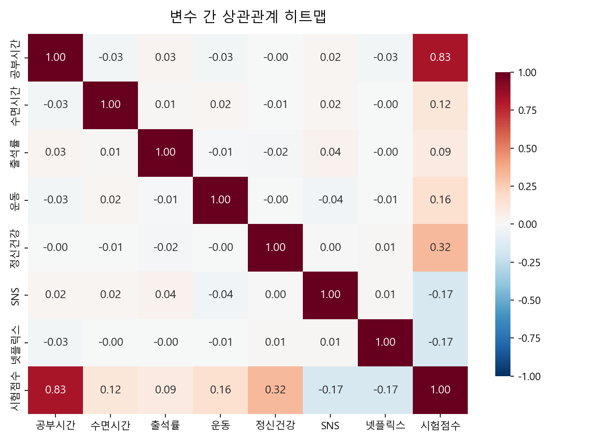
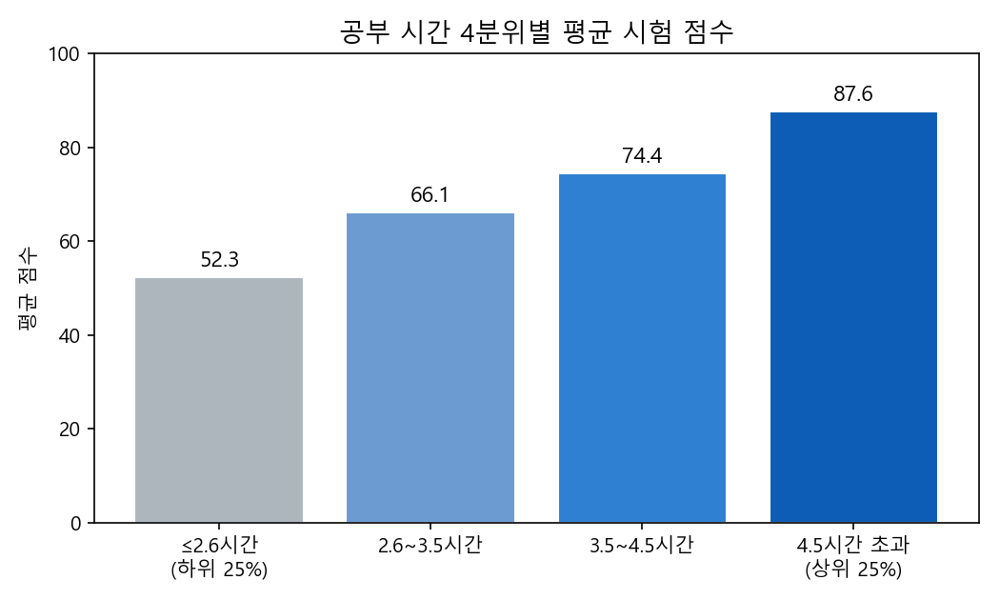
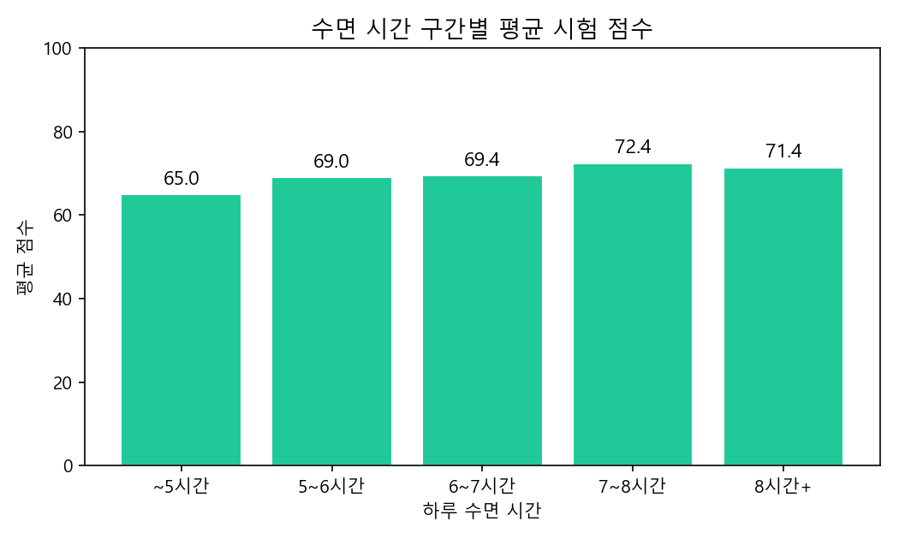
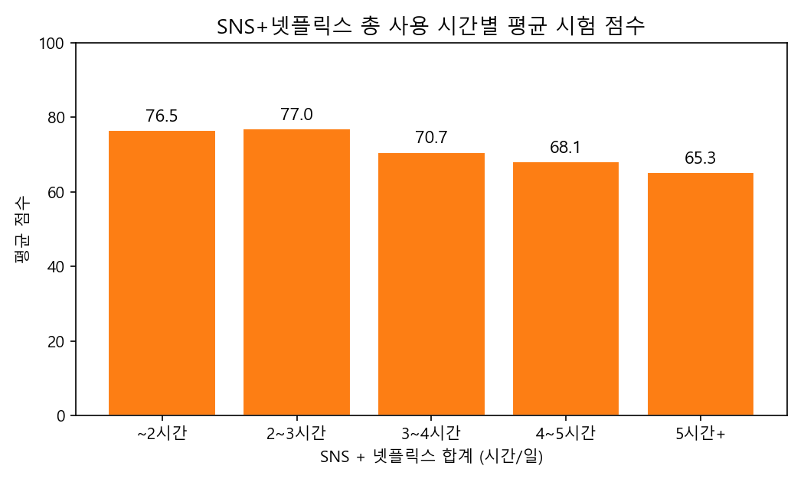
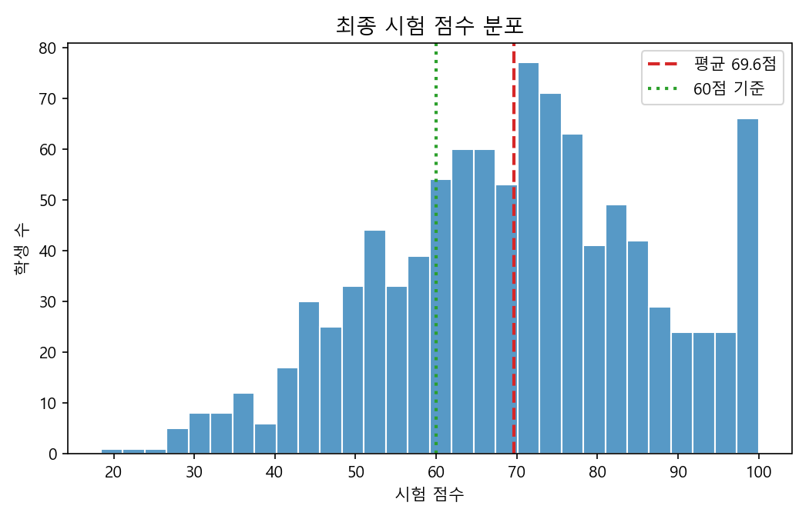
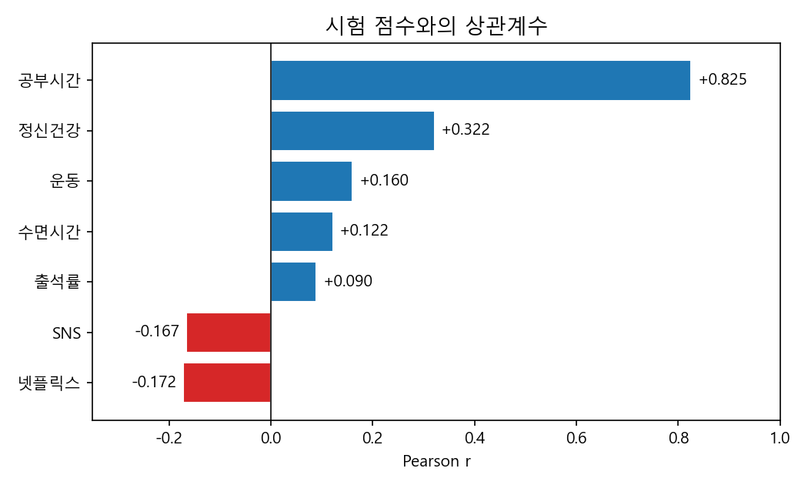

변수 간 상관관계 히트맵
시험 점수와의 관계를 중심으로 주요 변수 상관도

공부시간 4분위별 평균 시험 점수
공부시간 증가는 점수 상승과 밀접

상위 25%(≥4.5h)
87.6점
하위 25%(≤2.6h)
52.3점
최소 차이
+35.3p
공부시간 vs 성적 r²
0.681
수면 시간 구간별 평균 시험 점수
7~8시간 확보 시 성적 상향 경향

수면 7~8시간
72.4점
수면 < 6시간
67.6점
차이
+4.9p
수면시간 vs 성적 r
+0.122
SNS+넷플릭스 시간별 평균 시험 점수
미디어 사용량이 많을수록 평균 점수 하락

< 3시간
76.5점
≥ 5시간
65.5점
차이
-11.0p
미디어 총합 vs 성적 r
-0.167
시험 점수 분포
평균 69.6점, 정규분포와 유사

평균/중앙값
69.6 / 70.5
최솟값/최댓값
18.4 / 100.0
60점 미만 비중
28.0%
공부시간 < 3h 비중
33.4%
시험 점수와 주요 변수 상관계수
강한 순으로 정렬

공부시간
+0.825
가장 강한 양의 상관
정신건강
+0.322
중간 수준의 양의 상관
SNS
-0.167
약한 음의 상관
넷플릭스
-0.172
약한 음의 상관
집중 분석: 공부량 대비 성적 차이
미디어 사용량을 일정하게 볼 때도 공부시간이 성적에 가장 큰 영향
공부 ≥ 5h vs < 2h
87.6 → 52.3 (+35.3p)
미디어 ≥ 5h vs < 3h
65.5 → 76.5 (-11.0p)
수면 < 6h vs 7~8h
67.6 → 72.4 (+4.9p)
다중회귀 R²(공부·수면·SNS·넷플릭스·출석)
0.763
| 구분 | 범주 | 빈도 | 평균 점수 | 최소 | 최대 | 비고 |
|---|---|---|---|---|---|---|
| 공부시간 4분위 | ≤2.6h / 2.6~3.5h / 3.5~4.5h / ≥4.5h | 272/237/248/243 | 52.3 / 66.1 / 74.4 / 87.6 | 18.4 / 36.9 / 53.0 / 60.1 | 80.3 / 98.7 / 100 / 100 | 공부량↑ → 성적↑ 뚜렷 |
| 수면시간 | ~5 / 5~6 / 6~7 / 7~8 / 8+ | 127/241/319/210/103 | 65.0 / 69.0 / 69.4 / 72.4 / 72.0 | 32.1 / 18.4 / 31.0 / 29.7 / 31.8 | 100 / 100 / 100 / 100 / 100 | 7~8시간에서 최고 평균 |
| SNS+넷플릭스 | ~2 / 2~3 / 3~4 / 4~5 / 5+ | 90/120/226/240/324 | 76.5 / 77.0 / 70.7 / 68.1 / 65.5 | 29.7 / 42.8 / 18.4 / 31.0 / 32.1 | 100 / 100 / 100 / 100 / 100 | 사용량↑ → 평균↓ |
| 출석률 | <80% / ≥80% | 324 / 676 | 67.0 / 70.8 | 18.4 / 28.7 | 100 / 100 | 출석 양호 집단 +3.8p |